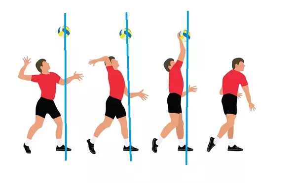
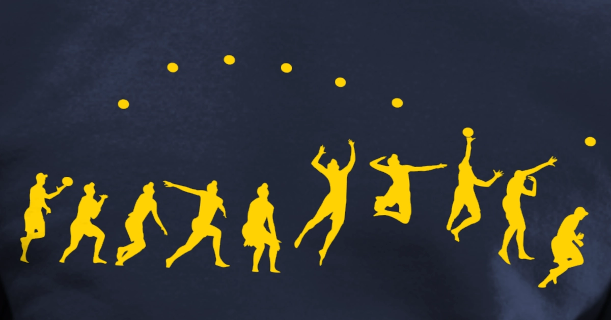

Serving
Here is everything you need to know about volleyball!
Volleyball is a sport for both men and women, that has a maximum of six players playing at a time.
Starting a rally:
- Serving is how a rally is started in volleyball, and the first chance to get a point


The basics:
- It is done when a rally ends, after a point is given, and when a new rally is starting, the team that earned the point gets to serve
- The players rotate serving each rally and serve behind the out-of-bounds line
- The way to serve is shown above: tossing the ball up, taking a step or lunging forward and rotating the whole body to hit the ball with full force to get it over the net
- Another way to serve is to jump serve, and tossing the ball up higher than a standing serve, and doing an attacking approach to hit the ball as high as possible to get a fast (hopefully hard to return) serve to the opponent
Click here for Home Page
Click here for Page 2
Click here for Page 3